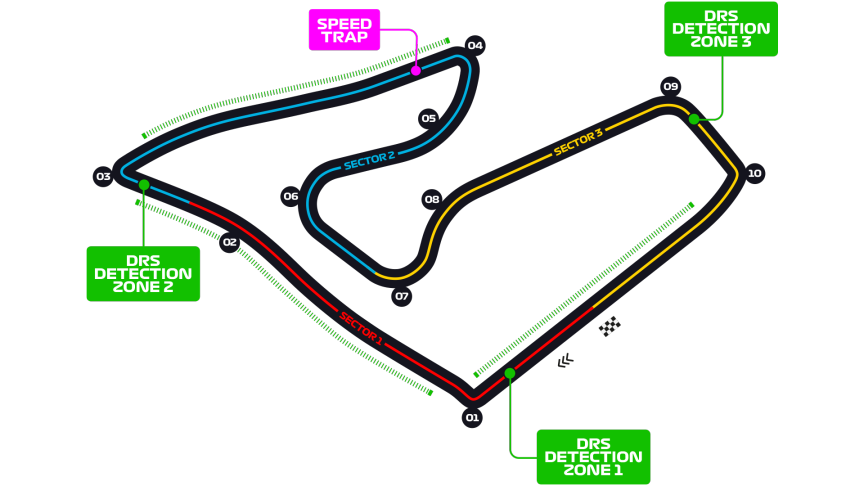

Grand Prix d'Autriche
Informations
Nom du circuit
Red Bull Ring
Lieu
Spielberg (Autriche)
Nombre de tours
71
Longueur du circuit
4.318 km
Distance de course
306.452 km
Dernier vainqueur
Max Verstappen
Classement nombres de victoires sur ce circuit
4 victoires - Max Verstappen
2 victoires - Mika Häkkinen
2 victoires - Michael Schumacher
2 victoires - Nico Rosberg
2 victoires - Valtteri Bottas
2 victoires - Lewis Hamilton
Le saviez-vous ?
Le circuit est désormais appelé Red Bull Ring, car en 2004 suite à la démolition des stands, le circuit n'est plus utilisable. C'est le propriétaire de Red Bull Dietrich Mateschitz qui racheta le circuit et lance un projet de reconstruction à l'identique du circuit.
En 2002, un scandale éclate autour de la Scuderia Ferarri. Alors que Rubens Barichello est en tête du GP, son équipe lui demande de céder sa position à son coéquipier Michael Schumacher, en bataille pour la tête du championnat. Il refusa dans un premier temps, mais la Scuderia commence à le menacer de plus en plus à la radio. C'est juste avant la ligne d'arrivée qu'il laissa finalement sa place à l'allemand.
Un GP qui affecte les productions de laits locales ? C'est ce qu'à affirmé Jean Alesi, ancien pilote de F1. D'après lui les vaches cesserait de produire du lait pendant plus d'une semaine après la course suite au brouhaha que provoque les monoplaces.